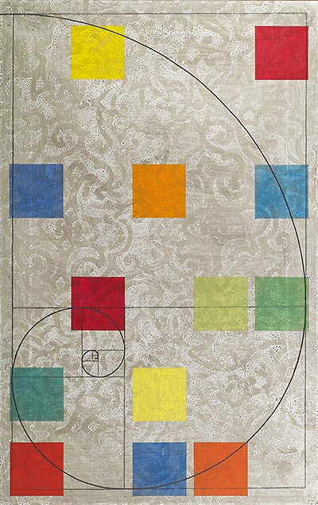
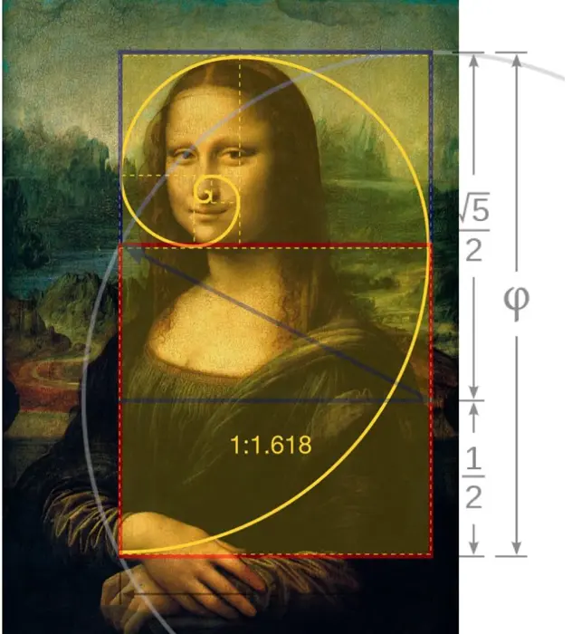

APRENDEMOS MATEMÁTICAS
Vamos a aprender un poco más sobre la asignatura que nos enseñan a lo largo de nuestra vida pero que luego pensamos para que sirve realmente, estoy hablando de las matematicas, una asignatura que para muchos de nosotros fue una pesadilla, pero que cuando aprendiamos disfrutabamos de ella.
Las matemáticas son una ciencia formal y deductiva que estudia las propiedades, relaciones y patrones entre entes abstractos como números, figuras geométricas, símbolos y estructuras.
Hay distintas ramas de las matemáticas, como son la suma y la resta que son aquellas operaciones más comúnes, por otro lado la multiplicación y la división, vamos a hacer una breve explicación y despues realizaremos unos cuantos problemas juntos.
Sumas y restas: La suma y la resta son las operaciones aritméticas básicas: agrupa o añade cantidades para obtener un total, mientras que la resta quita o diferencia una cantidad de otra. Se realizan alineando los números por valor posicional.
Multiplicación y división: La multiplicación es una suma repetida que une grupos iguales para hallar un producto. La división es la operación inversa, buscando repartir en grupos iguales o encontrar un factor faltante. Ambas son operaciones fundamentales que se resuelven de izquierda a derecha.
Más allá de la suma, resta, multiplicación y división, existen operaciones matemáticas fundamentales y avanzadas necesarias para cálculos complejos, incluyendo potenciación, radicación y logaritmos, pero este apartado es algo más complicado, ya que subimos nuestro nivel pero debemos primero aprender lo basico y obtener una base de las matemáticas.
Siempre hemos pensado que las matemáticas no nos servirian de nada en la vida cuando fueramos más mayores, lo que no sabiamos es que nuestras madres tenian razón cuando nos decian que las matemáticas estaban en todos lados e incluso donde menos te esperas que esten, como por ejemplo en los supermercados, en la lengua e incluso en el arte.
El arte de las matemáticas radica en la belleza, elegancia y creatividad al descubrir estructuras, patrones y conexiones invisibles, transformando conceptos abstractos en formas, simetrías y proporciones tangibles. Esta disciplina une la lógica pura con la estética, usando geometría, fractales y algoritmos para crear arte visual, música y arquitectura.


Una vez ya explicada las bases de las matemáticas tanto las lecciones como en la vida o el arte, vamos a poner aprueba tus conceptos. Resuelveme estas operaciones.
Vamos a dejar aparte las operaciones y vamos a comprobar tu rapidez mental con multiplicaciones, aqui te dejo un ejercicio de de comida de gato, dependiendo de la cantidad de comida que metas en la cesta ¿cuánto te costara en total? Y tambien te dejo un ejercicio a tu gusto, coloca los numeros que quieras y antes de ver su resultado hazlos tú aparte.